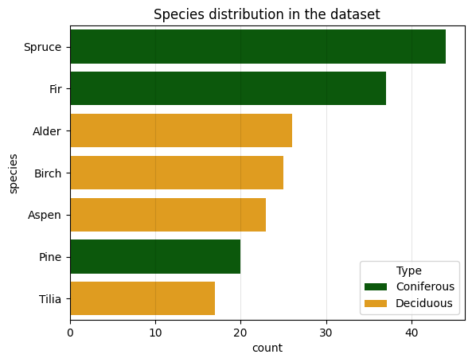
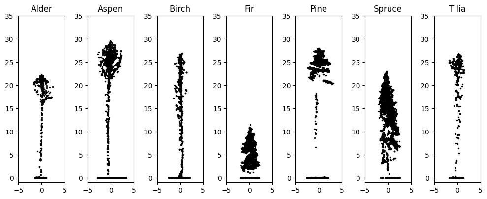
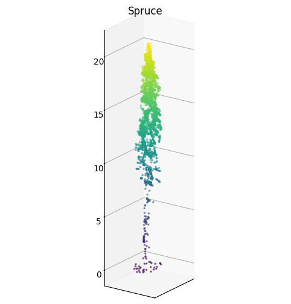
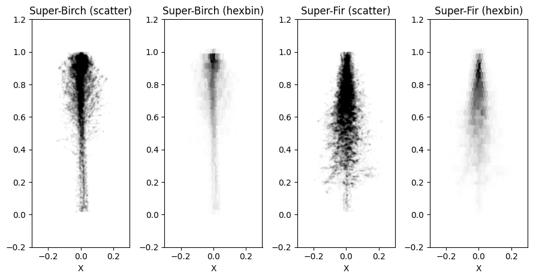
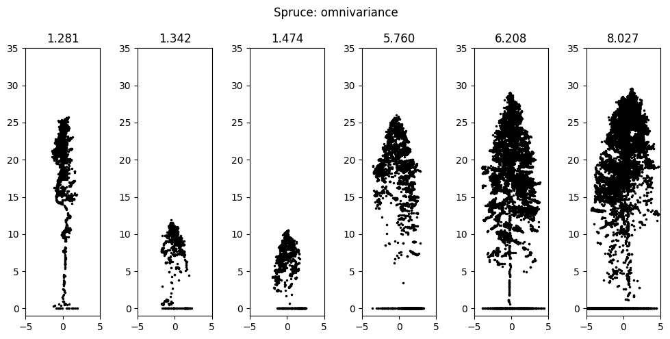
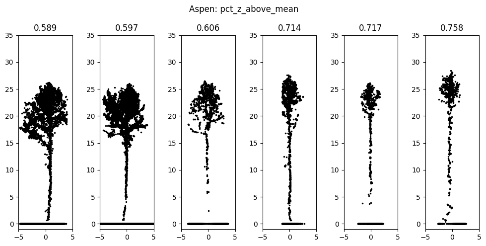
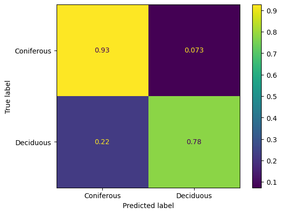
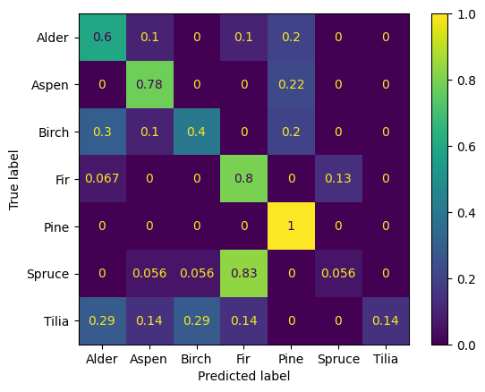

An exploration of properties of point clouds of individual trees extracted from a larger UAV LiDAR survey
Abstract
This study aims to explore the properties of point clouds of individual trees manually extracted from a large UAV LiDAR survey over a dense mixed forest. The dataset contains 192 trees of seven species, with an approximately even mix of deciduous and coniferous trees, which proves to be very limiting. Two experiments are described. The first is aimed at setting up an approach to help gain intuition about manual features used in classical machine learning on point clouds. Example visualizations are provided to demonstrate the effectiveness. The second is aimed at assessing the viability of approximating average tree shapes by estimating the kernel density of three-dimensional distributions of point coordinates. It shows relatively good overall accuracy in binary classification, but is unreliable in the multiclass setting and too slow. The dataset and the code are freely accessible through Kaggle.
Introduction
The demand for detailed forest inventories is growing, fueled by the need for quality data for harvest and afforestation planning, sustainable forest management and conservation, modeling of carbon stock and carbon cycles, and more. The increasing accessibility of UAVs and LiDAR sensors makes UAV LiDAR an ever more valuable tool for conducting such inventories. The technical characteristics of modern sensors alalow for very dense measurements, which in turn introduce a shift from the area-based approach (White 2013) dominating early research and applications of LiDAR in forestry and still widely used in the industry to an individual tree-based approach. This shift brings the requirement for algorithms for automatic detection and segmentation of individual trees within larger point clouds. This problem can be solved well for forest stands that are either predominantly coniferous or sparse, even by simple local maxima detection algorithms on rasterized point clouds (Eysn et al. 2015). However, it remains an open challenge to develop a universal, robust detection approach for dense mixed forests, in which the canopy structure is complex. There is a growing body of research on developing and applying more complex and precise methods, but most results that can be considered successful from the industrial adoption point of view are in more mild forest types Jeronimo et al. (2018).
In this study, we try to gain insight into the problem of tree detection and segmentation by looking at its expected output. We analyze a collection of individual trees manually identified in the large survey data over a dense mixed forest and explore their features and properties.
Materials and methods
The dataset for this study was created by manually extracting individual trees from a large UAV LiDAR survey over a dense mixed forest. The original point cloud was preprocessed by removing duplicates and noise, classifying the ground points, and normalizing the height. The dataset contains 192 point clouds of individual trees with a mix of coniferous and deciduous species. Figure 1 shows the distribution of species in the dataset, and Figure 2 shows two visualizations of samples from the dataset: a cross-section of a tree of every species constructed by ignoring the Y coordinate, and a single spruce in 3D. Because the observations are made from above, many trees have the highest concentrations of points at the top of their canopy and a very limited number of points along the trunk. Additionally, slight slopes of the terrain manifest as artificial tilt in some of the trees because of the height normalization of the original point cloud.
The first experiment we report in this manuscript aims to build intuition into commonly used features for classical machine learning on point clouds. We set up the experiment as a classification problem with two settings: a binary one, in which the target is the type of tree, coniferous or deciduous, and a multiclass one, in which the target is the species directly. The features we use include point height distribution features from (Woods, Lim, and Treitz 2008) and shape features from (Lucas et al. 2019) derived from the eigenvalues of the covariance matrix of the coordinates. We calculate each feature for the entire point cloud and use a 2% threshold for height to remove ground points from the calculation, since we find they serve only as noise. To verify that the features are meaningful and assess which are more important, we then fit a logistic regression model on standardized feature values and look at its 10-fold stratified cross-validation accuracy scores and feature coefficients. Finally, we arrange each individual tree within its species group by the value of a feature of interest and plot multiple samples from each end of the feature range. This allows us to associate features and their possible values with the actual shapes of trees.


The second experiment is also set up as a multiclass classification problem. Instead of encoding the shape of the point cloud through features based on distributions of heights and eigenvalues of the covariance matrix, we treat the whole tree cloud as a three-dimensional distribution. First, we construct super-trees for each species by merging multiple scaled and centered point clouds into one. Figure Figure 3} shows examples of such super-trees for birch and fir, visualized as a scatter plot with very low alpha and as a hex 2D histogram. Then, each super-tree is used to fit a kernel density estimator by treating each point as a three-dimensional observation. They can then be used to estimate the likelihood of individual trees belonging to the same distribution as each of the super-trees.

We make the data and code used in this study available through Kaggle (Dubrovin and Kedrov 2023). The notebooks there contain additional visualizations and experiments and are easy to copy, run, and modify in pinned environments without installing anything locally. We only report two experiments here due to limitations on the length of the manuscript.
Results and discussion
An obvious limitation of this study is the size of the dataset. A sample of 192 examples is hardly enough to run reliable experiments without investing significant effort to avoid overfitting. It also severely limits how tight the error bars on quantitative estimates can be. With that limitation in mind, below we present the results of the reported experiments and invite the reader to visit the Kaggle page that hosts the dataset to look at more detailed results and visualizations.
Table Table 1 reports the 10-fold stratified cross-validation accuracies of the logistic regression in both settings of the first experiment. In both settings, the model performs reasonably well, and the results are predictably much better in the simpler binary setting. The absolute values of the fitted coefficients, which we use to estimate the importance of features, are dominated by features based on the height distribution of points. Features based on the eigenvalues of the covariance matrix have very little effect on the overall prediction because all the point clouds in the dataset are very similar in shape. The heights of the trees are almost an order of magnitude larger than their widths, making one of the eigenvalues significantly larger than the rest and making all features based on them have very similar values. A notable exception is the omnivariance, calculated as the cube root of the product of all three eigenvalues and consistently ending up at the top of the coefficient magnitudes. Figure Figure 4 presents visualizations that are the target of the first experiment, using spruce and aspen and omnivariance and percent of points higher than mean height as examples. Based on the visualization, we can see how larger values of omnivariance correspond to spruce tree clouds that are more evenly spread out in all directions, being more elliptical than linear, and how lower values of percent of points higher than mean height correspond to bushier, top-heavy aspen tree clouds.


| CV accuracy | |
|---|---|
| Binary | 0.927 ± 0.042 |
| Multiclass | 0.777 ± 0.042 |
The metrics for the second experiment were calculated on a 40% hold-out set obtained from the entire dataset by stratified sampling and are shown in table Table 2. The confusion matrices for both settings are shown in Figure Figure 5. Once again, the results in the binary setting are significantly better than in the multiclass one, which is to be expected, especially with such a small overall sample size and a relatively large number of classes. Per-species metrics are all over the place: out of the 8 pines in the hold-out set, every one was classified correctly, and at the same time, not a single one of the 7 tilia was. Despite the overall performance in the multiclass setting being very low and chaotic, it’s still significantly better than random, which leads us to believe that the quality can be improved on larger samples. It is, however, important to note that the approach of estimating 3D kernel density for each species takes too long during the inference phase, despite being relatively easy to set up and apply and showing reasonable quality in the binary setting.


| Accuracy | |
|---|---|
| Binary: Overall | 0.857 |
| Binary: Coniferous | 0.927 |
| Binary: Deciduous | 0.778 |
| Multiclass: Overall | 0.506 |
| Multiclass: Coniferous | 0.512 |
| Multiclass: Deciduous | 0.500 |
Conclusions
This manuscript offers an overview of a study aimed at exploring the properties of point clouds of individual trees and searching for insight into the complex open problem of individual tree detection in large point clouds. We report two experiments, the first of which is set up to explore how commonly used features in classical machine learning on point clouds manifest in the shapes of actual individual trees, and the second – to test the validity of approximating the shapes of trees by fitting a kernel density estimator on super-trees of different species. We show an example of how arranging visualizations of tree clouds based on the value of a feature can be used to gain intuition on what that feature represents in the real world. We also show how a super-tree can be used to estimate a kernel density function and how that function can be used to predict whether a tree cloud belongs to a specific species. This ends up being relatively straightforward to set up but results in very slow inference and subpar quality, at least at this sample size. Both of the approaches described can be adapted to segmentation and detection in large point clouds by applying the classification algorithms in windows.
Acknowledgements
All data was collected and processed by Space technologies and services center, Ltd, Perm, Russia and published with their permission.
References
Balsi, M., S. Esposito, P. Fallavollita, and C. Nardinocchi. 2018. “Single-Tree Detection in High-Density LiDAR Data from UAV-based Survey.” European Journal of Remote Sensing 51 (1): 679–92. https://doi.org/10.1080/22797254.2018.1474722.
Dubrovin, Ivan, and Aleksandr Kedrov. 2023. “Individual Trees in UAV LiDAR Point Clouds.” https://www.kaggle.com/ds/4198515; Kaggle. https://doi.org/10.34740/KAGGLE/DS/4198515.
Eysn, Lothar, Markus Hollaus, Eva Lindberg, Frédéric Berger, Jean-Matthieu Monnet, Michele Dalponte, Milan Kobal, et al. 2015. “A Benchmark of Lidar-Based Single Tree Detection Methods Using Heterogeneous Forest Data from the Alpine Space.” Forests 6 (5): 1721–47. https://doi.org/10.3390/f6051721.
Jeronimo, Sean M A, Van R Kane, Derek J Churchill, Robert J McGaughey, and Jerry F Franklin. 2018. “Applying LiDAR Individual Tree Detection to Management of Structurally Diverse Forest Landscapes.” Journal of Forestry 116 (4): 336–46. https://doi.org/10.1093/jofore/fvy023.
Lucas, Chris, Willem Bouten, Zsófia Koma, W. Daniel Kissling, and Arie C. Seijmonsbergen. 2019. “Identification of Linear Vegetation Elements in a Rural Landscape Using LiDAR Point Clouds.” Remote Sensing 11 (3, 3): 292. https://doi.org/10.3390/rs11030292.
White, Joanne. 2013. A Best Practices Guide for Generating Forest Inventory Attributes from Airborne Laser Scanning Data Using the Area-Based Approach. Victoria, British Columbia: Canadian Forest Service.
Woods, M., K. Lim, and P. Treitz. 2008. “Predicting Forest Stand Variables from LiDAR Data in the Great Lakes – St. Lawrence Forest of Ontario.” The Forestry Chronicle 84 (6): 827–39. https://doi.org/10.5558/tfc84827-6.